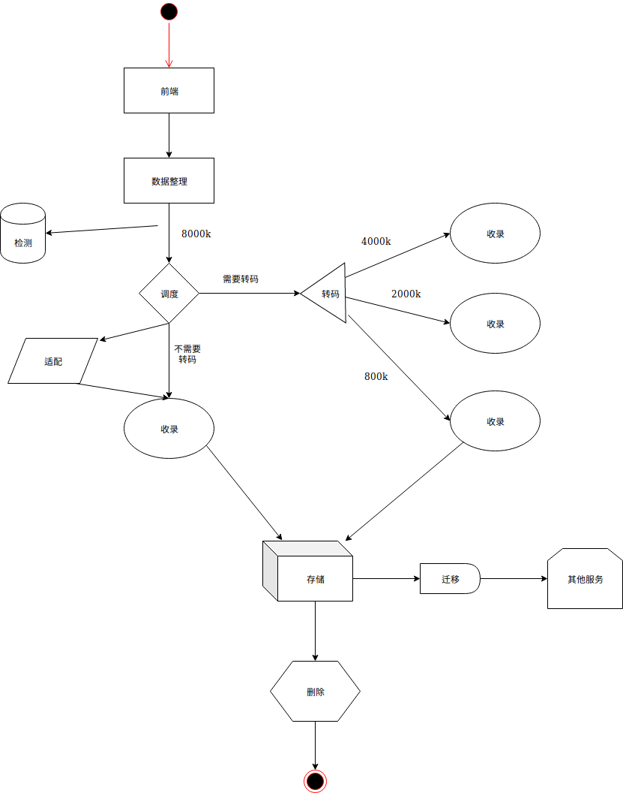

起因
因为工作相关，所以写篇文章记录下这整体的业务流程。
收录
文字简述
收录，简单来说就是将视频流保存成视频文件，比如后缀名为mp4,flv,ts等。那么需要哪些模块呢
- 前端：展示给用户看的，同时将用户点击的请求数据发送给后端做处理；
- 数据中转服务：在前端传给调度服务的数据格式可能会有误，所以中间要经过这个服务，对数据进行加工（一般是
json封装）后发送给对方； - 调度服务：负责所有数据库表的创建，记录的添加，修改，删除的操作；将要收录的源流分发给空闲的收录服务器；如果源流的码率较高，需要用转码服务器转成低码文件后收录；
- 源流和设备信息检测服务：检测源流的状态是否异常，如果异常就反馈给前端；检测设备的
CPU，物理存储，内存的使用占比情况； - 收录服务：开始收录时，由调度服务发给收录服务一个信号，收录服务开始工作，如果不需要收录了，也是由调度服务发给收录服务一个信号，收录服务停止工作；
- 转码服务：如果源流的码率过高，例如有8000k，而用户那边的网速又很差，这样会导致视频收录下来播放给用户会显得很卡，影响用户体验，因此需要经过转码服务将高码率的源流转成低码率后，再由收录服务进行收录；
- 迁移服务：收录下来后，其他模块可能也会需要，这时需要做迁移。
- 适配服务：如果添加的流类型是收录服务器不支持的，需要通过适配服务转换成收录服务支持的，再进行收录。
- 定时删除服务：收录的视频文件过多，极其占用物理存储资源，所以需要定时删除。这个定时删除服务就是做这样的事情。
图示

后记
最开始做这个我不知道是干嘛用的，直到部门老哥给我讲了下Youtube的视频播放过程，让我看到当你的网速不好时，为了保证视频的流畅，画质会差一些，等你网速好了画质再变得高清点。
而我这个原理和它类似。
注意，收录服务器和转码服务器在图示为了简洁只画了一台，实际上现场要部署很多台。